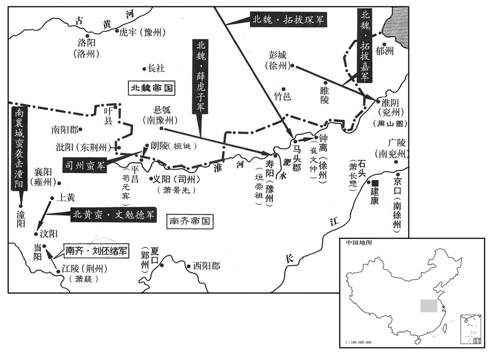
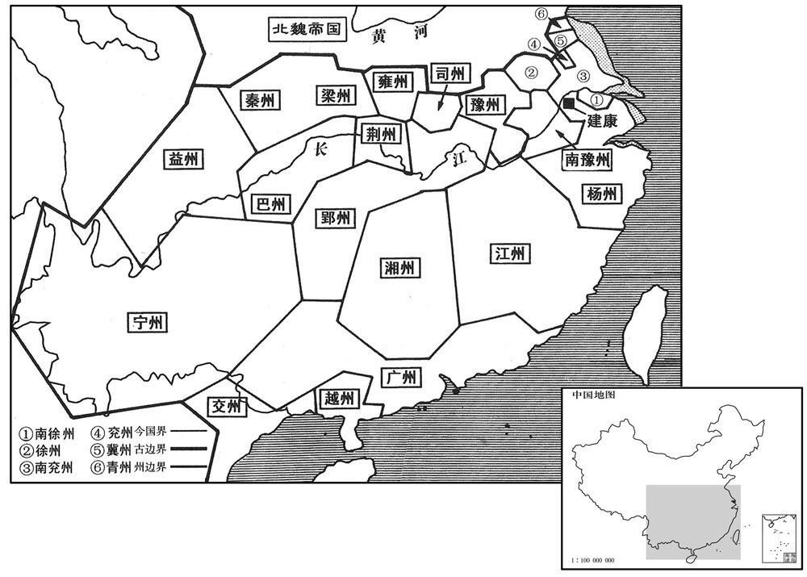
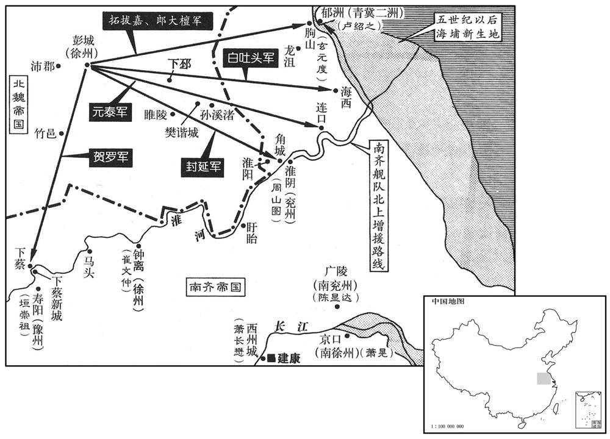
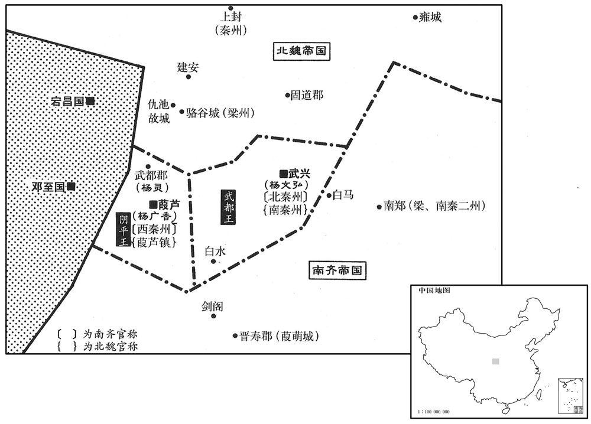

公元480年资治通鉴：本年记事、原文与白话对照
按原书编年位置阅读；追叙和史论不等于本年发生的事件。白话采用所据译本，缺译不以生成译文补齐。
卷135 · 本年记事
公元480年 · 齐太祖高皇帝建二年
二年〔（庚申、四八）〕
上传原文件年头的数字有误；按本卷年号与相邻年份定位为480年，原字保留。
上传原文的注释括号有异常，字符原样保留；无法可靠划分的段落默认全文显示。
本年事件索引（现代整理）
- 南齐大赦
- 褚渊拒受司徒任命，王俭任左仆射
- 萧道成祭南郊
- 北魏攻取马头戍，南齐戒严备战
- 北魏广川王拓跋略去世
- 南齐崔文仲击退北魏军并攻杀戍将
- 群蛮乘北魏南侵而起事，南齐出兵讨伐
- 北魏刘昶、拓跋嘉进攻寿阳
- 垣崇祖决肥水堰水淹北魏军
- 谢天盖部曲杀其主降南齐
- 南齐整顿户籍，以元嘉二十七年籍为准
- 南齐设巴州镇抚群蛮
- 南齐军攻取竹邑、睢陵
- 萧鸾出任郢州刺史
- 北魏准刘昶因雨撤军
- 孝文帝巡幸白登、火山
- 萧道成下令修筑建康外城
- 南齐军击败李乌奴，李退保武兴
- 孝文帝巡幸火山
- 皇太子妃裴氏去世
- 南郡王长懋移镇西州
- 角城戍降魏，魏军多路南下
- 孝文帝巡幸方山、武州山石窟
- 杨文弘击败南齐攻武兴军
- 发生日食
- 柔然遣使至南齐通好
- 常元真、胡青苟降北魏
- 南齐遣李安民巡行清水、泗水诸戍备魏
- 拓跋嘉率十万北魏军围朐山，南齐援军击退魏军
- 王俭辞吏部选职获准，改任侍中
- 杨广香改任西秦州刺史
- 冯熙、桓诞等分道攻南齐
- 淮北民不乐属魏而聚众起事
- 王僧虔奏请制止以汤水治囚
- 南齐封杨后起为北秦州刺史、武都王
- 褚渊再任司徒，刘祥当面讥讽
- 太子宴朝臣，沈文季讥褚渊
- 萧嶷任中书监、司空、扬州刺史
- 北魏封王叡为中山王

本年形势与背景参考图

本年形势与背景参考图

本年形势与背景参考图

本年形势与背景参考图
春，正月，戊戌朔，大赦。
春季，正月，戊戌朔（初一），南齐大赦。
以司空褚渊为司徒，尚书右仆射王俭为左仆射；渊不受。〔考异曰：齐书，「建元二年正月，以渊为司徒。十二月戊戌，以渊为司徒。四年六月癸卯，以司徒褚渊为司空。八月癸卯，司徒褚渊薨。」渊传：「三年为司徒，又固让。四年寝疾逊位，改授司空。及薨，诏曰：『司徒奄至薨逝。』盖二年正月辞，十二月受耳。纪、传前后各不相顾。〕
高帝萧道成任命司空褚渊为司徒，任命尚书右仆王俭为左仆射。褚渊没有接受任命。
辛丑，上祀南郊。
辛丑（初四），高帝前往南郊祭天。
魏陇西公琛等攻拔马头，戍杀太守刘从。〔琛，丑林翻。〕乙卯，诏内外纂严，发兵拒魏，征南郡王长懋为中军将军，镇石头。
北魏陇西公拓跋琛等人攻克马头戍，将南齐太守刘从杀掉。乙卯（十八日），齐高帝诏令朝廷内外实行戒严，调集兵力，抵御北魏，征召南郡王萧长懋出任中军将军，镇守石头。
魏广川庄王略卒。
北魏广川庄王拓跋略去世。
魏师攻锺离，徐州刺史崔文仲击破之。文仲遣军主崔孝伯渡淮，攻魏茌眉戍主龙得侯等，杀之。〔茌，仕疑翻。孙愐曰：龙，姓也。考异曰：齐纪作「龙渴侯」。今从齐书。〕文仲，祖思之族人也。
北魏军队进攻钟离，南齐徐州刺史崔文仲将北魏军打败。崔文仲派遣军主崔孝伯渡过淮水，攻打北魏茌眉戍主龙得侯等人，并将他们杀掉。崔文仲是崔祖思的同族。
群蛮依组山谷，连带华、湘、雍、郢、司五州之境，〔雍，于用翻。〕闻魏师入寇，□〔【章：甲十一行本空格作「官」字；乙十一行本同；孔本同。】〕尽发民丁，南襄城蛮秦远乘虚寇潼阳，杀县令。〔萧子显齐志，宁蛮府领郡有南襄城、东襄城、北襄城、中襄城郡，盖因群蛮部落分署为郡也。五代志：淮安郡慈丘县有后魏襄城郡。沈宋志，汶阳郡领潼阳、沮阳、高安三县，盖皆宋初置也。水经注曰：东汶阳郡沮阳县，沮水出其西北，东南径汶阳郡北，即高安县界，郡治锡城县，故新城郡之下邑。义熙初，分新城立郡，其地当在临沮县西。萧子显曰：桓温以临沮西界，水陵纡险，道带蛮、蜑，田土肥美，立为汶阳郡以处流民。〕司州蛮引魏兵寇平昌，平昌戍主苟元宾击破之。北上黄蛮文勉德寇汶阳，〔考异曰：齐纪作「文施德」。今从齐书。〕汶阳太守戴元宾〔【严：「宾」改「孙」。弃城奔江陵；〔晋武帝平吴，割中庐之南乡、临沮之北乡，立上黄县，治軨乡，属襄阳郡，晋安帝分属长宁郡。宋明帝以名与文帝陵同，改为永宁郡。五代志：竟陵郡章山县，西魏置上黄郡。今荆门长林县，即古之长宁县，有章山。九域志曰：山即禹贡所谓内方也。宋白曰：上黄县，隋改南漳县。〕豫章王嶷遣中兵参军刘伾绪将千人讨之，至当阳，〔章怀太子贤曰:当阳县西北即临沮故城。将，即亮翻；下同。〕勉德请降，秦远遁去。〔降，户江翻。〕
各部蛮人凭依着高山深谷，遍布荆州、湘州、雍州、郢州、司州五州的边境上。南齐听说北魏军队前来侵犯，便征集所有的人丁参军。南襄城蛮人秦远趁着朝廷空虚无备的时机侵犯潼阳，杀掉县令。司州蛮人带领北魏军队进犯平昌，平昌戍主苟元宾将他们击败。北上黄蛮人文勉德侵犯汶阳，汶阳太守戴元宾丢下城池，逃奔江陵。豫章王肃嶷派遣中兵参军刘绪率领一千人讨伐文勉德，来到当阳的时候，文勉德请求投降，秦远逃走。
魏将薛道标引兵趣寿阳，上使齐郡太守刘怀慰作冠军将军薛渊书以招道标；〔趣，七喻翻。冠，古玩翻。〕魏人闻之，召道标还，〔还，从宣翻，又如字。〕使梁郡王嘉代之。怀慰，乘民之子也。〔刘乘民见一百三十一卷宋明帝泰始二年。〕二月，丁卯朔，嘉与刘昶寇寿阳。将战，昶四向拜将士，流涕纵横，〔纵，子容翻。〕曰：「愿同戮力，以雪雠耻！」
北魏将领薛道标领兵奔赴寿阳，齐高帝让齐郡太守刘怀慰伪造冠军将军薛渊的书信，招抚薛道标。北魏方面闻讯以后，便将薛道标召回，让梁郡王拓跋嘉替代他。刘怀慰是刘乘民的儿子。二月，丁卯朔（初一），拓跋嘉与刘昶侵犯寿阳。在将要交战的时候，刘昶面向东西南北四方，对将士们叩头行礼，崐泪流满面地说：“但愿大家齐心合力，为我报仇雪耻！”
魏步骑号二十万〔骑，奇寄翻。〕豫州刺史垣崇祖集文武议之，欲治外城，堰肥水以自固。皆曰：「昔佛狸入寇，〔见一百二十五卷宋文帝元嘉二十七年。治，直之翻。佛，音弼。〕南平王士卒完盛，收倍于今，犹以郭大难守，退保内城。且自有肥水，未尝堰也，恐劳而无益。」崇祖曰：「若弃外城，虏必据之，外修楼橹，内筑长围，则坐成擒矣。守郭筑堰，是吾不谏之策也。」〔言策已先定，足以制腋，不为人所谏止。〕乃于城西北堰肥水，〔据水经：肥水自黎浆亭北流，过寿春城东。此立堰于西北者，西北，虏冲也；又因上流之势可决以灌虏。今安丰军有小史埭，即崇祖决堰处。〕堰北筑小城，周为深堑，〔堑，七艳翻。〕使数千人守之，曰：「虏见城小，以为一举可取，必悉力攻之，以谋跛堰；吾纵水冲之，皆为流尸矣。」魏人果蚁附攻小城，崇祖着白纱帽，肩舆上城。〔着，则略翻。上，时掌翻。〕晡时，决堰下水；魏攻城之众漂坠堑中，人马溺死以千数。〔溺，奴狄翻。〕魏师退走。
北魏的步、骑兵号称二十万。南齐豫州刺史垣崇祖召集文武官员商议对策，打算整治外城，在肥水上修筑堤坝，加强防守。大家都说：“以往，佛狸拓跋焘前来侵犯，南平王兵多将广，士气高昂，兵力是现在的好几倍，尚且认为外城太大，难以守卫，所以退入内城防守。而且，自从有肥水存在以来，从不曾有人在肥水上修筑过堤坝，恐怕此举也是徒劳无益的吧。”垣崇祖说：“如果我们放弃外城，胡虏肯定会占领外城，在外面修建望高台，在里面筑成长墙，那就会使我们坐以待擒了。防守外城，修筑堤坝，这是我绝无劝阻余地的计策啊。”于是，垣崇祖在豫州城的西北方修筑堤坝，拦截肥水，在堤坝的北面修筑一座小城，四周环绕着深深的沟堑，派遣好几千人守卫在那里。垣崇祖说：“胡虏看到此城狭小，以为一下子就可以攻取下来，肯定会全力攻打此城，企图谋求破坏堤坝。这时，我们放肥水冲击他们，他们便都成了漂流着的尸体了。”果然，北魏军队象蚁群般地趋附并攻打小城，垣崇祖头戴白色的纱帽，乘着轿子，登上城来。到了黄昏时分，垣崇祖命令决开堤坝，放水冲灌，北魏攻城的军队全都被冲进沟堑，淹死的人员马匹数以千计。北魏的军队撤退逃跑了。
谢天盖部曲杀天盖以降。〔降，户江翻。〕
谢天盖的部曲将谢天盖杀掉，归降南齐。
宋自孝建以来，政纲弛紊，簿籍讹谬。上诏黄门郎会稽虞玩之等更加检定，曰：「黄籍，民之大纪，国之治端。〔杜佑曰：黄籍者，户口版籍也。会，工外翻。治，直吏翻；下求治同。〕自顷巧伪日甚，何以厘革﹖」玩之上表，以为：「元嘉中，故光禄大夫傅隆年出七十，犹手自书籍，躬加隐校。〔隐者，痛核其实也。〕今欲求治取正，必在勤明令长。〔长，知两翻。〕愚谓宜以元嘉二十七年籍为正，更立明科，一听首悔；〔首，式又翻〕迷而不返，依制必戮；若有虚昧，州县同科。」上从之。
自孝建年间以来的刘宋朝廷，政务废驰，法纪紊乱，田簿户籍谬误百出。高帝颁诏命令黄门郎会稽人氏虞玩之等人重新核查审定，还说：“户籍，是对百姓的基本记载，是国家治理的端绪。近来弄虚作假的行为日益严重，应当怎样改正整顿呢？”虞玩之上表认为：“元嘉年间，已故的光禄大夫傅隆年过七十，仍然亲手缮写户籍，亲身认真核实。现在，要想使户籍得到整顿和纠正偏失，就一定要使各县长官精勤廉明。我认为应当以元嘉二十七年的户籍为基准，重新制订明确的法令，任凭违法者自首悔过。如果执迷不悟，就一定要依照命令加以制裁。倘若谎报隐瞒，州县官吏与违法者一同治罪。”高帝听从了他的建议。
上以群蛮数为叛乱，〔数，所角翻。〕分荆、益置巴州以镇之。壬申，以三巴校尉明慧昭为巴州刺史，领巴东太守。〔宋明帝泰始二年，以三峡险隘，山蛮寇贼，议立三巴校尉以镇之，寻省，顺帝升明二年复置。校，户教翻〕是时，齐之境内，有州二十三，郡三百九十，县千四百八十五。〔州，二十三，扬、南徐、豫、南豫、南兖、北兖、北徐、青、冀、广、交、越、荆、巴、郢、司、雍、湘、梁、秦、益、宁也。郡三百九十，有寄治者，有新置者，有俚郡、獠郡、荒郡、左郡、无属县者，有或荒无民户者。郡县之建置虽多，而名存车亡，境土蹙于宋大明之时矣。〕
由于各部落蛮人屡次制造叛乱，高帝决定从荆州与扬州两地分出一部分另设巴州，以便镇守。壬申（初六），高帝任命三巴校尉明慧昭为巴州刺史，兼任巴东太守。这时，南齐境内拥有二十三个州，三百九十个郡，一千四百八十五人县。
乙酉，崔文仲遣军主陈靖拔魏竹邑，杀戍主白仲都；崔叔延破魏睢陵，杀淮阳太守梁恶。
乙酉（十九日），崔文仲派遣军主陈靖攻克了北魏的竹邑戍，杀掉戍主白仲都。同时，崔叔延攻破了北魏的睢陵，杀掉淮阳太守梁恶。
乙酉，崔文仲遣军主陈靖拔魏竹邑，杀戍主白仲都；崔叔延破魏睢陵，杀淮阳太守梁恶。竹邑，汉沛郡之竹县也，后汉、晋曰竹邑，后废，魏盖于故地置戍也。贤曰：竹故城在今徐州符离县。睢陵，汉县，属临淮，后汉，晋属下邳，宋孝武大明元年，度属济阴，时入魏，置淮阳郡。〕
本段缺少可靠对应白话，原文完整保留；未使用生成译文。
三月，丁酉朔，以侍中西昌侯鸾为郢州刺史。鸾，帝兄安王道生之子也；早孤，为帝所艰，恩过诸子。〔为后鸾夺国杀帝子孙张本。〕
三月，丁酉朔（初一），高帝任命侍中、西昌侯萧鸾为郢州刺史。萧鸾是齐高帝的哥哥始安贞王萧道生的儿子。他幼年丧父，被高帝收养，高帝对崐他的疼爱，超过了亲生诸子。
魏刘昶以雨水方降，表请还师，魏人许之；丙午，遣车骑大将军冯熙将兵迎之。〔骑，奇寄翻。将，即亮翻。〕
由于正当雨季，北魏刘昶上表请求将军队撤回，孝文帝允许了他的请求。丙午（初十），孝文帝派遣车骑大将军冯熙率领军队前去迎接刘昶。
夏，四月，辛巳，魏主如白登山；五月，丙申苜，如火山；〔杜佑曰：云州治云中县，县界有白登山、白登台。水经注曰：白登南有武周川，川东南有火山，山上有火井，南北六十七步，广减尺许，源深不见底，炎势上升，当若微雷发响，以草爨之，则烟腾火发。〕壬寅，还平城。
夏季，四月，辛巳（十六日），北魏孝文帝前往白登山。五月，丙申朔（初一），孝文帝前往火山。壬寅（初七），返回平城。
自晋以来，建康宫之外城唯设竹篱，而有六门。会有发白虎樽者，〔晋志：正旦元会，设白虎樽于殿庭，樽盖上施白兽，若有能献直言者，则发此樽饮酒。按礼，白兽樽乃杜举之遗式；为白兽盖是后代所为，示忌惮也。白兽，即白虎，晋书避唐讳改曰兽。〕言「白门三重关，竹篱穿不完。」〔重，直龙翻。〕上感其言，命改立都墙。
自从晋朝以来，建康宫室的外城只是用竹篱环绕着，有六个大门。适逢有人揭开白虎樽的盖子，饮酒进言说：“建康白门三层关，竹篱穿破不完全。”齐高帝被这个人的话感动了，便命令改建城墙。
李乌奴数乘间出寇梁州，〔数，所角翻。间，古苋翻。〕豫章王嶷遣中兵参军王图南将益州兵从剑阁掩击之；梁、南秦二州刺史崔慧景发梁州兵屯白马，与图南覆背击乌奴，〔嶷，鱼力翻。将，即亮翻。「覆」当作「腹」。〕大破之，乌奴走保武兴。〔考异曰：魏书帝纪：「八月，慧景寇武兴。」今从慧景传。〕慧景，祖思之族人也。
李乌奴多次乘机出兵侵犯梁州，豫章王萧嶷派遣中兵参军王图南率领益州军队，由剑阁突袭李乌奴。梁州、南秦州两州刺史崔慧景调集梁州军队驻扎在白马，与王图南前后夹击李乌奴，将他打得大败，李乌奴逃往武兴，据城防守。崔慧景是崔祖思的同族。
秋，七月，辛亥，魏主如火山。
秋季，七月，辛亥（十七日），北魏孝文帝前往火山。
戊午，皇太子穆妃裴氏卒。〔妃卒，谥日穆〕
戊午（二十四日），南齐皇太子穆妃裴氏故去。
诏南郡王长懋移镇西州。
高帝颁诏命令南郡王萧长懋迁移到西州。
角成戍主举城降魏；〔角城注见下年。降，户江翻。〕秋，八月，丁酉，魏遣徐州刺史梁郡王嘉迎之。又遣平南将军郎大檀等三将出朐城，〔魏收志：琅邪朐县有朐城。朐，音劬。〕将军白吐头等二将出海西，〔海西，即汉海西县地也。宋明帝失淮北，侨立青州于赣榆县。泰始七年，割赣榆置郁县，立海西郡，齐明帝以为东海郡，东魏武定七年，改海西郡；又分襄贲置海西县。〔将军元泰等二将出连口，〔连口，涟水入淮之口也，时在襄贲县界。隋改襄贲县为涟水县。杜佑曰：楚州涟水县有连口渡。应劭曰；贲，音肥。〕将军封延等三将出角城，镇南将军贺罗出下蔡，〔据班志，下蔡，春秋之州来国也，为楚所灭。后吴取之，至夫差，迁蔡昭侯于此。后四世侯齐竟为楚所灭，故曰下蔡。汉为县，属沛郡，后省。东魏武定六年，以梁黄城戍为下蔡郡，隋为县，属汝阴郡。以下垣崇祖徙下蔡戍考之，则此戍置于淮水之西。五代时，周世宗徙寿春治下蔡，即其地。〕同入寇。
角城戍主率领全城归降北魏。秋季，八月，丁酉（疑误），北魏派遣徐州刺史梁郡王拓跋嘉迎接角城戍主。北魏还派遣平南将军郎大檀等三员将领出兵朐城，将军白吐头等两员将领出兵海西，将军元泰等两员将领出兵连口，将军封延等三员将领出兵角城，镇南将军贺罗出兵下蔡，一同前去侵犯南齐。
甲辰，魏主如方山；戊申，游武州山石窟寺。〔水经注曰：武周川水东南流，水侧有石祇洹舍并诸窟室，比丘尼所居也。其水又东转灵岩南，凿石开山，因岩结构，真容巨壮，法世所稀。据道元之言，浮屠氏巨丽处也。〕庚戌，还平城。
甲辰（疑误），北魏孝文帝前往方山。戊申（疑误），孝文帝游览武州山的石窟寺。庚戌（疑误），孝文帝返回平城。
崔慧景遣长史裴叔保攻李乌奴于武兴，为氐王杨文弘所败。〔败，补迈翻。〕
崔慧景派遣长史裴叔保在武兴进攻李乌奴，被氐王杨文弘击败。
九月，甲午朔，日有食之。
九月，甲午朔（初一），出现日食。
丙午，柔然遣使来聘。〔使，疏吏翻。〕
丙午（十三日），柔然派遣使者前来南齐通问修好。
汝南太守常元真、龙骧将军胡青苟降于魏。〔骧，思将翻。降，户江翻。〕
汝南太守常元真和龙骧将军胡青苟向北魏投降。
闰月，辛巳，遣领军李安民循行清、泗诸戍以备魏，〔行，下孟翻。〕
闰九月，辛巳（十八日），高帝派遣领军李安民巡视清水、泗水一带的各个据点，防备北魏的进攻。
魏梁邵王嘉帅众十万围朐山，〔帅，读曰率。〕朐山戍主玄元婴城固守，〔孙愐：玄，姓也。〕青、冀二州刺史范阳卢绍之遣子奂将兵助之。〔帅，读曰率；下同。〕庚寅，元度大破魏师。台遣军主崔灵建等将万余人自淮入海，夜至，各举两炬；魏师望见，遁去。
北魏梁郡王拓跋嘉率领十万兵马包围朐山，朐山戍主玄元度环城坚守，青州、冀州两州刺史范阳人氏卢绍之派遣儿子卢奂率兵援助玄元度。庚寅（二十七日），玄元度大败北魏军。南齐朝廷派遣军主崔灵建等人率领一万余人崐由淮水进入东海，黑夜降临的时候，每人各自举着两把火炬，北魏军见此情景，便逃走了。
冬，十月，王俭固请解选职，许之；加俭侍中，以太子詹事何戢领选。〔选，须绢翻。戢，阻立翻，又疾立翻。〕上以戢资重，欲加常侍，褚渊曰：圣旨每以蝉冕不宜过多。臣与王俭既已左珥，若复加戢，则八座遂有三貂；〔自汉以来，侍人、常侍皆右貂，令、仆与列曹尚书为八座。据戢传：帝为领军，戢为司徒左长史，相与来往，数与欢燕；戢盖龙潜之旧也。复，扶又翻。〕若帖以骁、游，亦为不少。」〔沈约曰：骁骑将军、游击将军，并汉杂号将军也，魏置为中军。及晋，以领护、左．右卫、骁、游为六军。不少者，谓其取数已多也。少，诗沼翻。〕乃以戢为吏部尚书，加骁骑将军。〔骁，坚尧翻。骑，奇寄翻。〕
冬季，二月，王俭再三请求解除自己执掌吏部的职务，高帝答应下来，加授王俭为侍中，任命太子詹事何戢主持铨选。高帝认为何戢的资望很高，便打算加授他为常侍。褚渊说：“皇上的旨意往往认为金蝉珥貂的侍从贵近的官员不应该过多。我与王俭已经在朝冠左方加饰貂尾，如果再给何戢挂貂，在六曹尚书、令、仆八座中便有三人冠饰貂尾了。如果让他兼任骁骑将军或是游击将军，职位也不算低的了。”于是，高帝任命何戢为吏部尚书，加任骁骑将军。
甲辰，以沙州刺史杨广香为西秦州刺史，又以其子炅为武都太守。〔炅，古迥翻，又古惠翻。〕
甲辰（十二日），高帝任命沙州刺史杨广香为西秦州刺史，还任命他的儿子杨炅为武都太守。
丁未，魏以昌黎王冯熙为西道都督，与征南将军桓诞出义阳，镇南将军贺罗出锺离，同入寇。
丁未（十五日），北魏孝文帝任命昌黎王冯熙为西道都督，与征南将军桓诞出兵义阳，另使镇南将军贺罗出兵钟离，共同前去侵犯南齐。
淮北四州民不乐属魏，〔四州入魏事见一百三十三卷宋明帝泰始三年。乐，音洛。〕常思归江南，上多遣间谍诱之。〔间，古苋翻。谍，徒协翻。诱，音酉。〕于是徐州民桓标之、〔考异曰：魏书，兰陵民桓富，盖即标之也。今从齐书。〕兖州民徐猛子等所在倮起为寇盗，聚众保五固，推司马朗之为主。魏遣淮阳王尉元、平南将军薛虎子等讨之。〔尉，纡勿翻。〕
淮水北岸四州百姓不愿意归属北魏，经常希望返回江南地区。高帝派遣了许多暗探前去诱导他们反抗北魏。因此，徐州百姓桓标之、兖州百姓徐猛子等人到处蜂拥而起，明抢暗劫，集结民众，防守五固，推举司马朗之担任首领。北魏派遣淮阳王尉元和平南将军薛虎子等人前去讨伐他们。
十一月，戊寅，丹阳尹王僧虔上言：「郡县狱相承有上汤杀囚，名为救疾，实行冤暴。因囚有时行瘟疫宜汗，遂上汤以蒸杀之。上，时掌翻。〕岂有死生大命，而潜制下邑！愚谓囚病必先刺郡，〔刺，谓州刺史；郡，谓郡守也。或曰：书病囚之姓名而白之于郡曰刺。〕求司与医对共诊验，〔职司，谓郡曹掌刑狱者。〕远县家人省视，然后处治。」〔处治，谓处方治病也。省，悉景翻。处，昌吕翻。治，直之翻。〕上从之。
两版字句有差异，建议核对原文。
十一月，戊寅（十六日），南齐丹阳尹王僧虔进言说：“郡县的监狱历来沿袭着用有毒的汤药杀害生病的罪囚的做法，名义上说是要救活病人，实际上是制造冤狱，肆为暴行。怎能将这人命关天的大事，由地方官暗中控制！我认为，如果罪囚病了，一定要先向刺史禀告，要求主管刑狱的官员会同医生一齐前去诊断验查。对于家住僻远各县的罪囚，要让家人前来探望，然后才能处方治病。”高帝听从了他的建议。
戊子，以杨难当之孙后起为北秦州刺史、武都王，镇武兴。
南齐高帝任命杨难当的孙子杨后起为北秦州刺史、武都王，镇守武兴。
十二月，戊戌，以司空褚渊为司徒。渊入朝，以腰扇障日，〔腰扇，佩之于腰，今谓之折迭扇。朝，直遥翻；下同。〕征虏功曹刘祥从侧过，曰：「作如此举止，羞面见入，扇障何益！」渊曰：「寒士不逊！」祥曰：「不能杀袁、刘，安得免寒士！」〔谓杀袁粲，刘秉也。〕祥，穆之之孙也。祥好文学，而性韵刚疏，撰宋书，讥斥禅代；王俭密以闻，坐徙广州而卒。〔刘穆之，宋朝佐命元臣，祥以是得罪于齐，可谓无忝厥祖矣。好，呼到翻。〕
十二月，戊戌（初七），南齐高帝任命司空褚渊为司徒。褚渊入朝进见，用折扇遮蔽阳光，征虏功曹刘祥在从他身边经过的时候说：“作出这样的举动，羞于当面见人，用扇子遮掩，又有什么用处！”褚渊说：“穷念书人太出言不逊了！”刘详说：“既然不能诛杀袁粲和刘秉，怎么能不当一个穷念书人呢？”刘祥是刘穆之的孙子。刘祥喜爱文献经典，性情刚正，才调疏狂。他撰修了一部《宋书》，讥讽诋斥帝位禅让，王俭暗中上报高帝，使他因此获罪，被贬到广州，后来就故去了。
太子宴朝臣于玄圃，右卫率沈文季与褚渊语相失，文季怒曰：“渊自谓忠臣，不知死之日何面目见宋明帝！”太子笑曰：“沈率醉矣。”
太子宴朝臣于玄圃，〔东宫有玄圃。〕右卫率沈文季与褚渊语相失，文季怒曰：「渊自谓忠臣，不知死之日何面目见宋明帝！」太子笑曰：「沈率醉矣。」〔史言褚渊失节，人得以面斥之。率，所律翻。〕
南齐太子萧赜在玄圃宴请朝廷百官，右卫率沈文季与褚渊话不投机，沈文季生气地说：“褚渊认为自己是一个忠臣，不知道他死后怎么还能有脸去见宋明帝！”太子萧赜笑着说：“沈文季是喝醉啦。”[33]壬子，以豫章王嶷为中书监、司空、扬州刺史，以临川王映为都督荆·雍等九州诸军事、荆州刺史。
壬子，以豫王嶷为中书监、司空、扬州刺史，以临川王映为都督荆．雍等九州岛诸军事、荆州刺史。〔嶷，鱼力翻。雍，于用翻。〕
本段缺少可靠对应白话，原文完整保留；未使用生成译文。
是岁，魏尚书令王叡进爵中山王，加镇东大将军；置王官二十二人，以中书侍郎郑羲为傅，郎中令以下皆当时名士。又拜叡妻丁氏为妃。〔此事传之史策，可以为王叡荣邪！〕
本年，北魏尚书令王睿晋升爵位为中山王，加任镇东大将军。王府设置官员二十二人，由中书侍郎郑羲担任王傅，郎中令以下各官职，也都是由当时的知名之士来担任，孝文帝还将王睿的妻子丁氏封为王妃。
译本中未与胡注本可靠对应的内容
以下另列供核对版本差异，不并入胡注本正文。
译本所附古文
南齐太子萧赜在玄圃宴请朝廷百官，右卫率沈文季与褚渊话不投机，沈文季生气地说：“褚渊认为自己是一个忠臣，不知道他死后怎么还能有脸去见宋明帝！”太子萧赜笑着说：“沈文季是喝醉啦。”[33]壬子，以豫章王嶷为中书监、司空、扬州刺史，以临川王映为都督荆·雍等九州诸军事、荆州刺史。
译本白话
壬子（二十一日），南齐高帝任命豫章王萧嶷为中书监、司空、扬州刺史，任命临川王萧映为都督荆、雍等九州诸军事和荆州刺史。